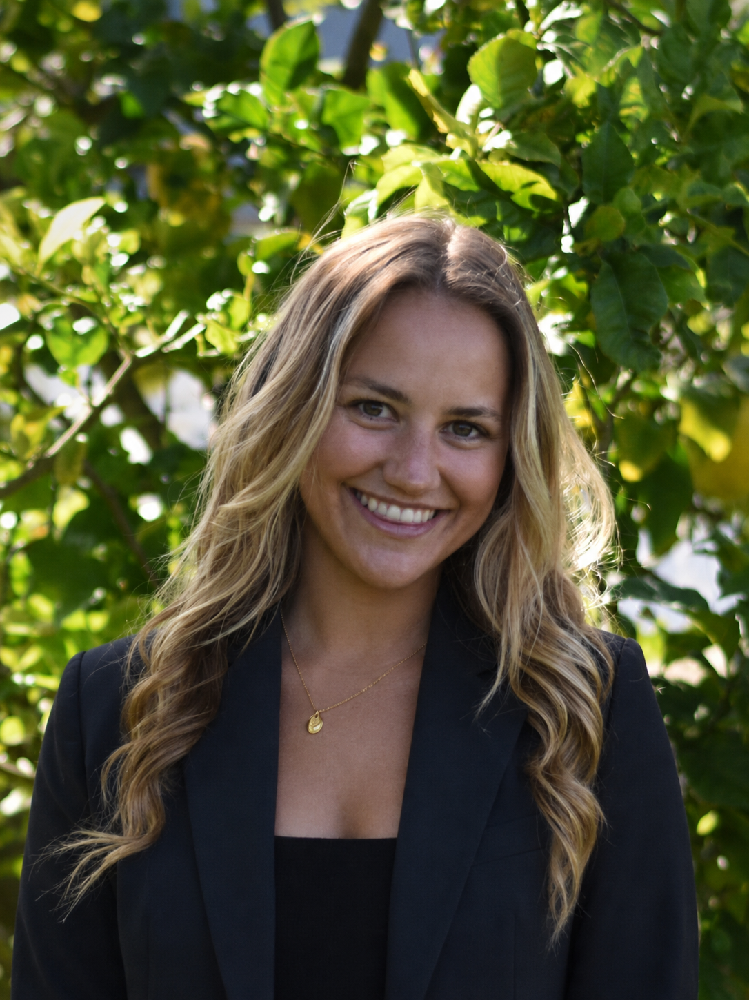

MS Business Analytics · Cal Poly SLO · Former D1 athlete.
Translating consumer and product data into strategy and insight, with a focus on marketing analytics, consumer behavior, and experimentation.
MS Business Analytics graduate from Cal Poly SLO with a background in Statistical Data Science from UC Davis, where I spent four years as a Division I soccer athlete. I've always believed the best decisions come from data paired with genuine curiosity about people.
Drawn to roles where data drives decisions about how people live, shop, and engage with brands: marketing analytics, consumer insights, and product analytics across consumer tech, CPG, lifestyle, and athletic wear.

Personal wearable data analysis uncovering trends in running performance and recovery. Predictive models for marathon outcomes and an interactive training dashboard, motivated by the gap in women's endurance research.
Managed and analyzed large-scale engagement datasets (~70M rows) to identify product adoption trends. Translated findings into consumer-focused insights and strategic recommendations for technical and business audiences. Full details confidential per industry agreement.
Segmented customers into 9 behavioral cohorts and identified high-risk churn groups. Modeling uncovered early churn signals and delivered targeted retention strategies projected to reduce churn from 14.5% to 6.6% for key segments. Full details confidential per industry agreement.
Influencer-driven trend forecasting in fashion and athletic apparel, correlating creator engagement spikes with trend rise/peak/decline cycles using NLP on captions and quasi-experimental A/B methods.
Comparative financial health analysis across Lululemon, Nike, Under Armour, and Adidas, covering revenue growth, gross margin trends, DTC vs. wholesale mix, and inventory dynamics with an interactive Streamlit dashboard.
Open to full-time roles in marketing analytics, consumer insights, product analytics, and growth experimentation, particularly at consumer-facing companies across tech, CPG, lifestyle, and athletic wear.